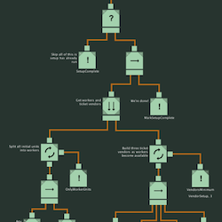
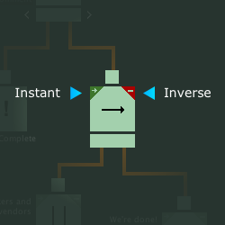
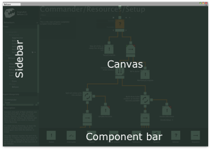
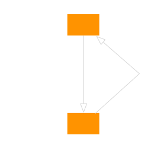
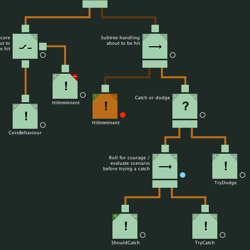

2.3.1 Temasek Polytechnic
Behave is a system, the purpose of which is to streamline the iterative process of designing, integrating and debugging behavioural AI via behaviour trees.
Most behaviour tree implementation, though generally working under the same principles, differ slightly in their definition of the practical method of behaviour trees. Behave uses a definition very close to the one described on AIgameDev.com. So if you are completely new to behaviour trees then that site is a great source of learning.

The structure of a tree is defined by a number of interconnected control nodes, ending in leaf nodes – actions. Actions are the interfaces to your agent code, talking to both sensors (enquiring about agent or world state) and motors (affecting a change in agent or world state).
A tick of a tree flows top to bottom, evaluating branching based on tree state and then bottom to top, propagating result values and updating the tree state.
Each control node has its own rule-set setting it apart – defining which child node it ticks and how it responds to the result of it – Success/Failure or Running. In general, though, a result of Running (indicating more processing needed) will always make sure that the child in question gets evaluated again next tick.
All nodes hold a tiny bit of state to indicate the current execution flow – state such as the index of the last ticked child for sequences and selectors. This state is updated in accordance with the rule-set of the node in question – in response to the result of the current tick.
With a few exceptions, once a node has updated its state, it also completes – returning a result of Sucess/Failure or Running to its parent node. Generally this means that any tree tick will result in at least one action node ticked.
The result of the root node is the result of the entire tree execution – Running indicating that the tree has not completed and Success/Failure indicating a complete run and its result.
Before starting tree execution from its initial state, it must first be reset. This resets all node state set in earlier ticks of the tree.
Each node has a number of design-time configuration options – some types more than others. Two options shared by all are Instant and Inverse.

Inverse simply changes result values of Success to Failure and vice-versa.
The instant flag (off by default) actually alters the execution of certain parent nodes. When enabled, this can be used to have simple sensor actions not “consume” an entire tick, as its Sequence or Selector parent node will continue to its next child immediately after its evaluation.
For more details on nodes and their configuration options, see the “Nodes” chapter.
The Behave system is roughly divisible in four parts:
Visually represented by a common behaviour tree design notation, the Behave designer aims to shorten the distance between idea and implementation as much as possible.
At design-time, all Behave data goes into behave Libraries, which for runtime get compiled into an executable format. It is quite possible to use multiple libraries in each project both at edit and runtime, but commonly just one library per project is used.

Unity After creating a Behave library asset via the Asset/Create menu or the Create dropdown in the project window, the Behave main window will pop up. You can also access it from the inspector when a Behave library is selected or from the Window menu.
Unity Aside from their asset form, Behave libraries can also live as exported .behave files. Not editable before imported back into asset form again, .behave files can be handy for transferring (full or partial) libraries or backup. Import/export can be found under the Assets/Behave menu.
Standalone Libraries live as .behave files on disk, which can be created and loaded from the sidebar menu.
In the library settings – accessible via the library name at the top of the sidebar, you can export the current library fully or partially as well as import a .behave file into the current library – merging the two.
With a library being edited, trees can be added to it via the little “+” button next to the “Trees” headline in the sidebar. Double-clicking items in the sidebar lets you rename them – Unix path seperators serving as a means to group trees together.
By drag-drop operation from the component bar to the canvas or via the keyboard interface, nodes can be easily added to your current tree. Within the canvas, easy drag-drop or keyboard operations allow you to quickly connect, configure and organise them.
Please find an overview of the keyboard mapping below:
| Shift + mouse drag | Drag node only (default being drag subtree) |
| Arrow keys | Move selection around the tree |
| Alt + Arrow keys | Move selected node and subtree |
| Shift + Alt + Arrow keys | Move selected node only |
| Shift + Left/Right arrow | Move selected output connection left/right |
| Return/Enter | Show insertion cursor/insert |
| Esc | Hide insertion cursor/deselect |
| Tab | Cycle insertion cursor type |
| Cmd/Ctrl + Backspace | Delete node |
| Shift + Cmd/Ctrl + Backspace | Delete input connection |
| T | Toggle component instant flag |
| V | Toggle component invert flag |
| C | Switch Parallel component completion mode |
| I | Switch Parallel component child completion mode |
Once your idea has made it from your thoughts to the canvas, the next goal of Behave becomes to wire that idea to your application code as quickly as possible.
This is achieved through a compiler. It builds your trees to runtime accessible classes which an be instantiated, wired to an agent and ticked via a direct function call.
Since your behaviour trees end up as classes and functions, they are not just fast, but also familiar and easy to use when programming your application.
To compile your currently edited library, select the library name in the sidebar, configure for debug or release, choose the compiler to use and press the “Apply changes” button.
Alternatively, click the apply changes button to the right of the “Library” sidebar header to compile with the last chosen options.
At runtime, for each compiled Behave library class, you can request new instances of your designed behaviour trees. When doing so, you need to specify an agent handling the newly instantiated tree.

Trees and agents live in a symbiotic relationship. The agent ticks the tree via a function call and the tree calls back to the agent for action handling.
Agent handler functions are either resolved by the tree, on instantiation, dynamically locating and linking agent functions via introspection or by the agent deriving from a compiled agent “blueprint” – an abstract class with virtual functions for the necessary handlers.
Tree to agent invokes with no registered handlers go to default handlers on the agent.
Any good rapid iteration tool needs good tools for testing and validating designs. The Behave debugger fits the bill nicely.
When built in debugging mode, Behave libraries include debugging data and functionality for all contained trees. Instantiated trees will, to each attached debugger, continuously send information about the currently active node of the tree. The debugger uses this information to visually show you the current state of the active tree instances.

Additionally, any attached debugger may at any point unplug tree instances and manually tick or reset them. Unplugged trees will on local tick immediately return a “running” state without evaluating or changing any tree state. This allows the developer to pause a tree and step through its execution while in a relevant environment.
Debugged trees may also unplug themselves if in their execution they happen upon a node marked with a breakpoint.
Last, but definitely not the least, overrides let debuggers augment the simulation as perceived by the executing trees. This facilitates easy testing of complex or rare scenarios or perhaps the impact of new actions with no handlers implemented.
Note that since the debugger executes over the network, you can debug any Behave build on your machine, another computer, on a phone or where-ever it is running. WebPlayer builds are the exception as their sandbox environment do not allow for incoming socket connections.
For debugging to function in your runtime, you need to either update it directly at your convenience / start it with a specified frequency or in your library build settings specify that the debugger should auto-launch. See the reference for more information.
Assuming that you are running a Behave tree which has been built for debug and that you are updating the debugger runtime as described in the Flow section, your runtime should show up in the debugger list of the Behave window.
If you are confident in your configuration and you are still not seeing your runtime, you might want to try hitting the refresh button a couple of times. Once you see the runtime, clicking it will connect the editor to it, list all contained trees and let you debug them.